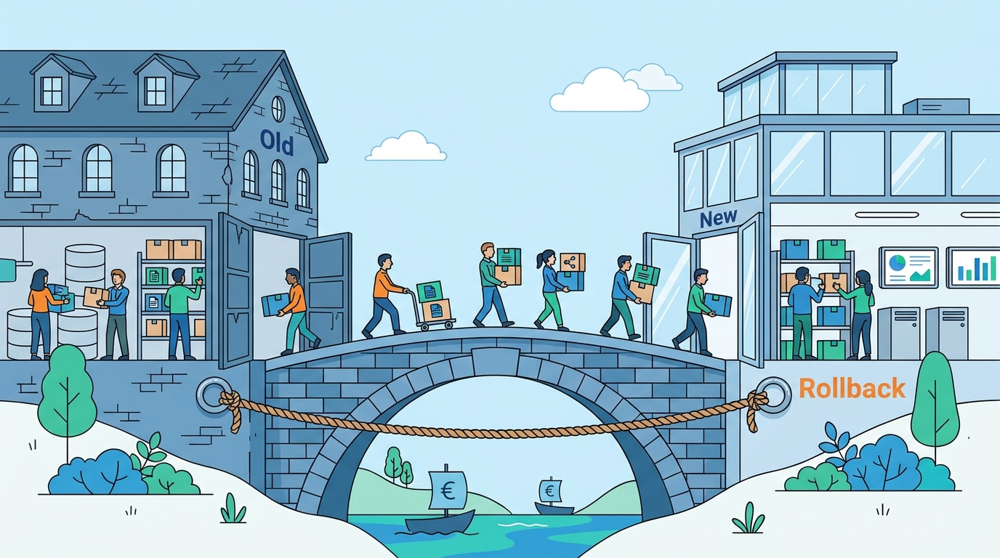

Part X — EVOLUTION: Decisions That Change With Scale
Moving Without Burning the Bridge: Replatforming and Migration
AI-assisted: researched and written with Claude Code, images generated with the Gemini API. How this works

Part X — EVOLUTION: Decisions That Change With Scale
AI-assisted: researched and written with Claude Code, images generated with the Gemini API. How this works
